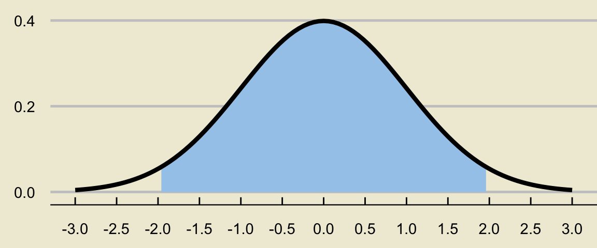
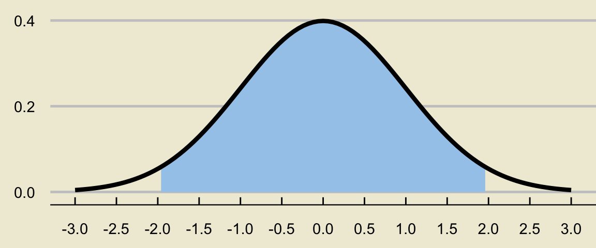
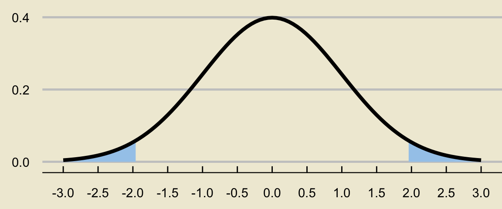
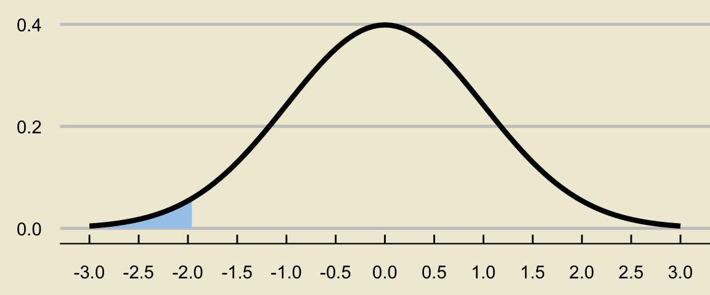
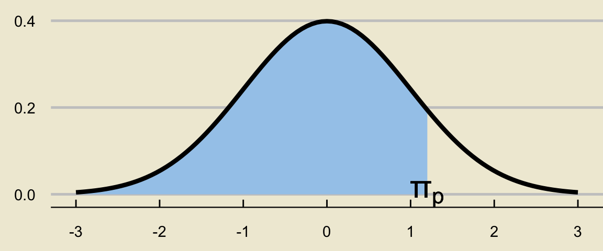
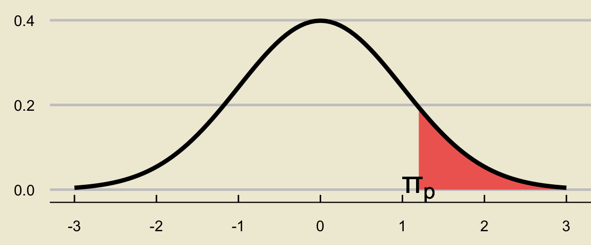
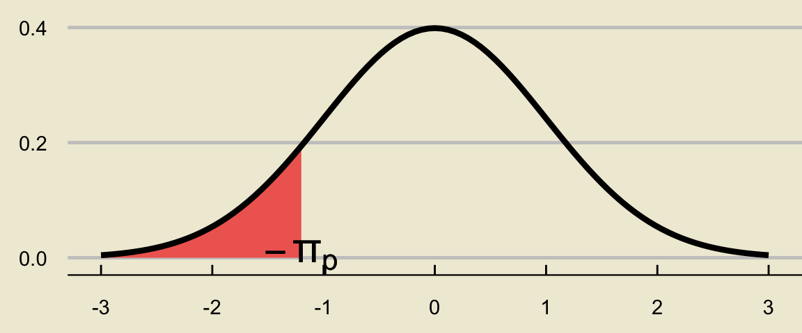

Warning: Using `size` aesthetic for lines was deprecated in ggplot2 3.4.0.
ℹ Please use `linewidth` instead.
Further Inference on Proportions
A veterinarian wishes to determine the true proportion of cats that suffer from FIV (Feline Immunodeficiency Virus). To that end, she takes a representative sample of 500 cats and finds that 3.2% of cats in this sample have FIV. What is the probability that the proportion of cats that are FIV-positive in her sample of 500 cats lies within 1 percent of the true proportion of FIV-positive cats?
Now, we can apply the substitution approximation to plug in \(\widehat{p}\) in place of \(p\) in the denominator of our \(z-\)scores to compute \[\begin{align*} z_{1, \ \text{sub}} & = \frac{0.01}{\sqrt{\frac{(0.032)(1 - (0.032))}{500}}} = \frac{0.01}{0.00787} = 1.27 \\ z_{2, \ \text{sub}} & = - \frac{0.01}{\sqrt{\frac{(0.032)(1 - (0.032))}{500}}} = - \frac{0.01}{0.00787} = -1.27 \end{align*}\]
Finally, consulting our standard normal table, we find the answer to be \[ 0.8980 - 0.1020 = \boxed{0.796 = 79.6\%} \]
However, the key assumption in this procedure is our ability to take multiple samples from the population.
In many practical situations, this is not feasible.
So, here is a new question to consider: given just a single sample from the population, what can we say about \(p\)?
Well, we’ve already seen that it’s risky to simply take \(\widehat{p}\) (i.e. the value of \(\widehat{P}\) that was observed in the sample we took) to be an estimate of \(p\), due to the randomness associated with \(\widehat{P}\).
Instead of looking for point estimates of \(p\), what happens if we instead provide intervals we believe may contain \(p\)?
A veterinarian wishes to determine the true proportion of cats that suffer from FIV (Feline Immunodeficiency Virus). To that end, she takes a representative sample of 100 cats and finds that 3.2% of cats in this sample have FIV.
Again, it’s risky to say that “the true proportion of FIV-positive cats is 3.2%” based solely on this sample.
Instead, we are going to start proposing intervals of values that we believe contain \(p\).
Now, clearly the strengths of our beliefs will depend on the interval we provide.
For example, I am 100% confident that the true proportion of FIV-positive cats is somewhere in the interval \((-\infty, \infty)\).
But, suppose we instead consider the interval \((0.030, \ 0.034)\); now we can’t really say that we’re 100% certain this interval covers the true value of \(p\).
This is the basic idea of what are known as confidence intervals.
I particularly like the analogy our textbook (OpenIntro Statistics) uses:
[…] Using only a point estimate is like fishing in a murky lake with a spear. We can throw a spear where we saw a fish, but we will probably miss. On the other hand, if we toss a net in that area, we have a good chance of catching the fish. (page 181)
For the purposes of this class, we will construct confidence intervals for an arbitrary parameter \(\theta\) (e.g. a population proportion \(p\), a population mean \(\mu\), etc.) of the form \(\widehat{\theta} \pm \mathrm{m.e.}\) where \(\widehat{\theta}\) represents some point estimate of \(\theta\) and \(\mathrm{m.e.}\) represents a margin of error.
So, for the veterinarian example, our confidence interval will be of the form \(\widehat{p} \pm \mathrm{m.e.}\).
Before constructing a confidence interval, however, we need to specify our confidence level. In other words, we need first have an idea of how confident we want to be that our interval contains the true parameter value.
For example, a 95% confidence interval is an interval \(\widehat{\theta} \pm \mathrm{m.e.}\) that we are 95% confident covers the true value of \(\theta\).
Here’s a question: based on everything we’ve talked about thus far, do you think higher confidence levels correspond to wider or narrower intervals?
That’s right: the higher our confidence level, the wider our interval will be.
As an extreme example, consider again the slightly absurd confidence interval \((-\infty, \ \infty)\); this is a 100% confidence interval because we are 100% confident that it covers the true value of the parameter!
So, therein lies the tradeoff: the more confidence we want, the wider we need to make our intervals and the less informative they become in pinning down the true value of the parameter.
Alright, let’s return to our considerations on population proportions.
Again, our confidence interval will take the general form \(\widehat{p} \pm \mathrm{m.e.}\).
It makes sense that the margin of error should include some information about the variability of \(\widehat{P}\). As such, we take our confidence intervals to be of the form \[ \widehat{p} \pm z^{\ast} \cdot \sqrt{ \frac{p(1 - p)}{n} } \] where \(z^{\ast}\) is a constant that depends on our confidence level.
Warning: Using `size` aesthetic for lines was deprecated in ggplot2 3.4.0.
ℹ Please use `linewidth` instead.
Some of you may have an inkling that a normal table may be helpful…. and it will be!
To make clear how a normal table will help, let’s convert our picture to be in terms of tail areas:


Again, \(z^{\ast}\) must satisfy \[ \mathbb{P}(Z \leq -z^{\ast}) = 0.025 \]
From a normal table, we see that \[ \mathbb{P}(Z \leq -1.96) = 0.025 \]
Therefore, we must have \[ \mathbb{P}(Z \leq -z^{\ast}) = \mathbb{P}(Z \leq -1.96) \] that is, \(-z^{\ast} = -1.96\) or \(\boxed{z^{\ast} = 1.96}\).
Use a similar set of reasoning to show that a 90% confidence interval for a population proportion \(p\) takes the form \[ \widehat{p} \pm 1.645 \cdot \sqrt{\frac{p(1 - p)}{n}} \]
As a quick aside: notice that what we’ve done is actually found various percentiles of the standard normal distribution!
Percentiles of a distribution are defined much in the same way we defined the percentiles of a list of numbers: the pth percentile of a random variable \(X\) is the value \(\pi_p\) such that \(\mathbb{P}(X \leq \pi_p) = p\).
To find the pth percentile of the standard normal table, here are the steps we use:
Find the 4.55th, 83.4th, and 96.41th percentiles of the standard normal distribution.
Let’s also quickly discuss one more property of the standard normal distribution: its density curve is symmetric about the \(y-\)axis.
This actually leads to an interesting (and very useful) result about percentiles of the standard normal distribution:
The \(p\)th percentile of the standard normal distribution is equal to negative one times the \((1 - p)\)th percentile of the standard normal distribution.
Warning in is.na(x): is.na() applied to non-(list or vector) of type 'language'
Warning in is.na(x): is.na() applied to non-(list or vector) of type 'language'
Warning in is.na(x): is.na() applied to non-(list or vector) of type 'language'
Therefore, if the area to the left of \(\pi_p\) is \(p\) (which was our initial assumption), the area to the left of \(-\pi_p\) is \((1 - p)\).
| Confidence Level | Value of \(\boldsymbol{z^{\ast}}\) |
|---|---|
| 90% | 1.645 |
| 95% | 1.96 |
| 99% | 2.575 |
Recall that these \(z^{\ast}\)’s are simply corresponding percentiles (scaled by \(-1\)) of the standard normal distribution.
To find \(z^{\ast}\) corresponding to an arbitrary \(100 \times (1 - \alpha)\) interval we either:
find the \((\alpha / 2) \times 100\)th percentile of the standard normal distribution and multiply by \((-1)\)
find the \([1 - (\alpha / 2)] \times 100\)th percentile of the standard normal distribution.
For example, suppose we want to construct a 99% confidence interval.
This is equivalent to constructing a \((1 - 0.01) \times 100\%\) confidence interval, meaning to find the confidence coefficient we can:
find the \((0.01 / 2) \times 100 = 0.5\)th percentile of the standard normal distribution and scale by \(-1\), which yields a value of around \(2.575\)
find the \([1 - (0.01 / 2)] \times 100 = 99.5\)th percentile of the standard normal distribution, which (again) yields a value of around \(2.575\)
A veterinarian wishes to determine the true proportion of cats that suffer from FIV (Feline Immunodeficiency Virus). To that end, she takes a representative sample of 500 cats and finds that 3.2% of cats in this sample have FIV. Construct a 95% confidence interval for the true poportion of FIV-positive cats.
Okay, now that we have an example of a confidence interval under our belt, let’s talk about the correct interpretation of confidence intervals.
The following are all correct interpretations of our confidence interval:
We are 95% confident that the true proportion of FIV-positive cats is between 0.0165 and 0.0475.
We are 95% confident that the interval \([0.0165 \ , \ 0.0475]\) covers the true proportion of FIV-positive cats.
Here is a technically incorrect way of interpreting the confidence interval: there is a 95% probability that the true proportion of FIV-positive cats lies between 0.0165 and 0.0475.
Why is this typically rejected as an interpretation of a confidence interval?
Because this phrasing makes it sound as though the true proportion of FIV-positive cats is a random variable!
I grant that the above is a very subtle point. However, Statisticians are quite particular about wording when it comes to interpreting confidence intervals. As such, we will be particular in this class as well!
As a film critic, you are interested in determining the true proportion of people that have watched The Mandalorian. You take a representative sample of 100 people, and note that 47% of these people have watched The Mandalorian.
Construct a 95% confidence interval for the proportion of people that have watched The Mandalorian, and interpret your interval in the context of the problem.
When constructing an 85% confidence interval for the proportion of people that have watched The Mandalorian, would you expect this interval to be wider or shorter than the interval you found in part (a)?
Now, actually construct an 85% confidence interval for the proportion of people that have watched The Mandalorian and see if this agrees with your answer to part (b).
As a political scientist, Morgan would like to know the true proportion of people in a city that support Candidate A in an upcoming election. To that effect, they take a representative sample of 120 people and determine that 51% of these sampled individuals support Candidate A.
Construct an 87% confidence interval for the true proportion of people that support Candidate A.